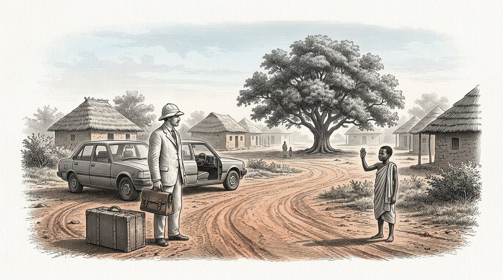
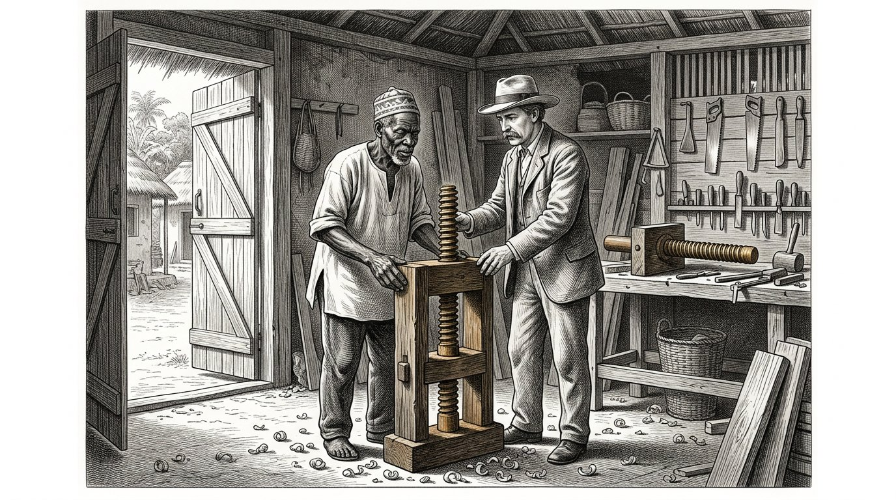

LIVRO CINCO
O Kosaris
O livro do parceiro

LIVRO CINCO
O livro do parceiro
A carta que se adiantou
Prólogo — proferido por Kosus
Eu sou Kosus. Quando abrir este quinto livro, terão decorrido treze anos desde a minha morte, e Petros já teve tantas vezes nas mãos o escrito que Alkion lhe deu que a encadernação de couro que o envolve amaciou. Este já não é o meu livro. É o livro de Petros. Falo o prólogo apenas porque o costume assim o exige e porque quero dizer uma coisa antes de começar.
Livro Quatro era sobre um líquido. Livro Cinco é sobre a relação entre duas pessoas que querem fazer juntas esse líquido num lugar onde ainda não foi feito. Essa é uma pergunta diferente. Quem faz um líquido precisa de técnica. Quem constrói uma relação precisa da balança de Timaris. A primeira pode ser aprendida. A segunda pode ser arruinada.
Petros partiu da aldeia portuária com uma arca, uma garrafa e o caderno. Antes de partir, escreveu uma carta. A carta seguiu adiante no navio que zarpou três semanas antes dele. Na carta figurava o nome Yara e a morada de uma aldeia situada no equador, onde Alkion e Demira tinham estado anos antes. Na carta dizia-se: sou Petros, discípulo de Kosus, sucessor de Alkion. Não venho para levar. Venho perguntar se me permite aprender consigo e mostrar-lhe o que aprendi.
A carta chegou três semanas antes de Petros. Yara leu-a. Leu-a duas vezes. Depois guardou-a numa gaveta e não disse nada a ninguém. O que está na gaveta virá à tona neste livro quando chegar a hora.
Quem lê este livro não aprende a exportar um líquido. Quem lê este livro aprende a construir um sistema em conjunto sem que, no fim, nenhuma das duas partes pense ter perdido. É algo menor para aprender do que parece. E é algo maior para fazer do que todos dizem.
Dou a palavra a Petros. A partir daqui, é ele quem fala.
O Kosus diz:uma carta que se adianta ao viajante é a primeira fibra da balança suspensa entre duas pessoas. Quem chega sem carta tem de se apressar. Quem deixa a carta chegar antes de si, chega no seu próprio tempo.
Por Jacobus van Merksteijn
Este é o Livro Cinco de Kosaris. Dá seguimento ao Livro Quatro, no qual o líquido provinha da erva e a aldeia se mantinha aquecida num inverno sem gás. No final do Livro Quatro, Alkion entregou o manuscrito de Kosus a Petros, e Anthea encerrou o livro com a promessa de que o primeiro discípulo de Petros escreveria, por sua vez, o Livro Seis.
Por isso, Petros navega neste livro. Viaja até ao equador, onde, quando era mais jovem, já andara quatro anos. Chega a uma aldeia onde vive Yara, que conhece do Livro Um, Parte X, como a mulher do vestido vermelho. Já não é a mesma de então — envelheceu, e a cooperativa que ela e os seus anciãos fundaram cresceu até se tornar algo para que três países vizinhos voltaram os olhos.
Escrevi este livro depois de três encontros com Petros ao longo dos últimos anos e da leitura das cartas que escreveu a Alkion e Anthea. As próprias cartas ficaram na posse de Anthea. O que lê é o meu resumo daquilo que ele me contou e do que as cartas me permitiram compreender.
Nomeio uma coisa pelo seu nome. O Livro Cinco não é sobre ajuda ao desenvolvimento nem sobre exportação de energia. É sobre o que significa chegar ao Sul como alguém do Norte sem trazer consigo os pressupostos do século passado. Isso é mais difícil do que parece. Petros sabe-o, e o livro mostra o que acontece quando, ainda assim, ele tenta fazê-lo. Em alguns aspectos, fracassa. Yara ajuda-o a voltar aos trilhos. Noutros, aprende com ele algo que ainda não sabia. Essa é a balança em que este livro se pesa.
Quem lê este livro e pensa que é sobre África, não o está a ler bem. É sobre a forma como duas pessoas de dois continentes aprendem a construir juntas algo que nenhum dos dois teria conseguido fazer sozinho. É isso precisamente que os quatro pilares querem dizer quando são postos por escrito.
Malta, agosto de 2027.
Parte 1

Em que Petros chega ao equador, Yara o recebe sem lhe estender a mão, e a primeira semana é dedicada a escutar em vez de falar.

Petros desembarcou num cais onde, às sete da manhã, o sol já estava mais alto do que estaria à meia-noite em Malta, se lá estivesse. A sua arca estava ao lado. A bolsa de couro pendia-lhe do ombro. A garrafa de hidrolisado estava embrulhada nas suas camisas, no fundo da bolsa.
Estava um rapaz no cais que sabia o seu nome. O rapaz disse: é Petros. Eu sou Baraka. Yara mandou-me. Venha.
Petros disse: não tenho cavalo nem carroça. Baraka disse: isso é bom. Há um carro. Petros disse: tem um carro? Baraka disse: a aldeia tem um carro. Hoje posso conduzi-lo porque vou buscá-lo.
Desceram o cais em direcção a um Toyota antigo, amarelo, que estava preso com uma corda ao lugar onde faltava a porta. Baraka carregou a arca para a bagageira. Disse: isto é pesado? Petros disse: contém uma prensa e um livro. A prensa não é grande, mas é pesada. Baraka disse: então é pesada.
Avançaram uma hora para o interior. A estrada era vermelha e esburacada, e Petros sentia a caixa deslizar atrás de si a cada solavanco. Baraka conduzia devagar e sem pressa. Disse: tem fome? Petros respondeu: ainda não. Baraka disse: então, tanto melhor, pois só comemos depois de chegar.
Passaram por mangueiras, por um rebanho de cabras e por três mulheres com trouxas à cabeça. Baraka cumprimentou-as sem parar. Petros disse: toda a gente se cumprimenta aqui. Baraka disse: não é toda a gente. São Fatou, Aminata e Mariam. Passam por aqui todas as manhãs. Se por aqui passasse alguém que eu não conhecesse, não o cumprimentaria. Isso é diferente.
Petros disse: penso que tenho muito a aprender sobre quem é quem aqui. Baraka disse: não é difícil. Tem de ouvir os nomes. Quando alguém tem um nome, sabe que os outros o conhecem. Quando alguém passa sem nome, sabe que não é daqui. É tudo.
Chegaram a uma aldeia com uma longa fila de casas baixas e uma grande mangueira no centro de uma clareira. Sob a mangueira, estava sentada numa cadeira uma mulher com um vestido vermelho. Era mais velha do que Petros imaginara que Yara seria. Levantou-se quando viu o carro. Caminhou até ao carro. Não estendeu a mão.
Ela disse: bem-vindo, Petros, discípulo de Kosus. Senta-te primeiro. Falaremos esta noite. Hoje, escutas. Petros anuiu. Disse: obrigado, Yara. Sentou-se no banco sob a mangueira. Baraka trouxe-lhe água. E Petros escutou durante toda a tarde os sons da aldeia, sem dizer uma palavra.
O Kosus diz:quem chega a uma terra estrangeira e fala no primeiro dia, fala de si próprio. Quem escuta no primeiro dia, fala no segundo dia dos outros. Só quem fala dos outros é entendido no terceiro dia.
E ninguém havia mentido.

Yara regressou ao fim da tarde. Disse: venha comigo. Vamos comer. Levou Petros até uma longa mesa de madeira, posta sob um telhado de folhas secas. Já havia doze pessoas à mesa: Baraka, três homens mais velhos, quatro mulheres da idade de Yara e quatro crianças entre os sete e os treze anos.
Yara disse: este é Petros. Vem de muito longe. Conhece Alkion e Demira. Esteve aqui há dez anos, mas provavelmente já não o conhece, porque, nessa altura, viajou durante quatro anos por todas as aldeias da costa, sem permanecer em parte alguma mais de um mês.
O mais velho dos homens à mesa disse: não permaneceu tempo suficiente num só lugar para ser conhecido em parte alguma. Isso acontece com mais frequência entre os povos do Norte. Petros disse: eu sei disso e, desta vez, quero fazer as coisas de modo diferente. Quero ficar aqui enquanto for necessário, e não menos tempo.
Yara disse: quanto é necessário? Petros disse: não sei. Aprendo isso consigo. Yara disse: é uma boa resposta. Lembre-se de que foi o senhor que a deu. Quando, daqui a três meses, ficar impaciente, lembrar-lho-ei.
Comeram. A refeição era arroz com frango e um molho verde que Petros não conhecia. Perguntou o que era. Uma das mulheres disse: isso é Moringa. Petros disse: essa conheço-a. Esprememo-la juntamente com a erva. A mulher disse: espremem-na? Petros disse: as folhas dela, juntamente com o Juncao. Isso torna o líquido límpido.
A mulher disse: nós comemo-la. Secamo-la, moemo-la e juntamo-la ao molho. Não a esprememos. Petros disse: talvez seja melhor assim. Nunca me ocorreu que também se pudesse comer Moringa. Sempre a vi como uma substância auxiliar.
Yara disse: essa é a primeira coisa que aprende connosco. Aquilo a que chama um adjuvante, para nós é uma cultura. Aquilo a que chama uma cultura, para nós é um medicamento. Quando espreme Moringa, desperdiça qualquer coisa. Quando a come, fica mais forte. Se trabalharmos em conjunto, temos primeiro de acordar o que comemos e o que esprememos. Caso contrário, estraga a nossa cozinha e insulta-nos sem o saber.
Petros assentiu. Disse: anoto isso. Yara disse: escreve isso mais tarde. Agora come. Comeram. As estrelas surgiram por cima do telhado de folhas. Petros sentiu que estava mais longe de casa do que alguma vez estivera e, ao mesmo tempo, sentiu que estava precisamente no lugar certo.
O Kosus diz:quem, num país estrangeiro, reconhece um adjuvante que é aí uma cultura agrícola, deve saber que não chegou a um fornecedor. Chegou a uma cozinha. Não insulte a cozinha, ou nunca mais comerá connosco.
E ninguém havia mentido.

Na segunda noite, Yara levou Petros para sua casa. Era uma casa comprida e baixa, com uma varanda. Na varanda havia uma escrivaninha. Sobre a escrivaninha encontrava-se uma gaveta. Na gaveta havia papéis.
Yara abriu a gaveta. Tirou de lá uma carta. Disse: foi o senhor quem a escreveu três semanas antes da sua chegada. Li-a duas vezes. Guardei-a nesta gaveta. Não disse a ninguém que a tinha recebido.
Petros disse: por que não? Yara disse: porque queria ver se o senhor chegaria como a carta prometia. Na carta, escreveu que não vinha para levar. Escreveu que vinha para pedir. Durante três semanas, observei como chegaria. Hoje vi-o chegar. Não veio para levar. Veio para pedir. Agora a carta pode sair da gaveta.
Petros disse: e se eu tivesse chegado de outra maneira? Yara disse: então a carta teria de ter ficado na gaveta. E amanhã ter-lhe-ia dito que era bem-vindo numa aldeia mais adiante, onde mora o meu cunhado. Ele é educado e hospitaleiro e tê-lo-ia hospedado durante três semanas sem que tivesse aprendido nada connosco. Teria regressado com histórias, e não com conhecimento.
Petros disse: como soube que eu seria diferente? Yara disse: não sabia. Esperava que assim fosse. A sua carta estava escrita de maneira diferente das cartas que recebo de outros nortenhos. Eles começam sempre por aquilo que vêm trazer. O senhor começou por aquilo que veio pedir. Foi um bom sinal. Mas os sinais podem mentir. Por isso, a carta ficou à espera durante três semanas.
Petros perguntou: o que me escreveu em resposta? Yara disse: nada. Não respondo às cartas de pessoas que não conheço. Respondo às pessoas que chegam. É diferente. O papel mente com facilidade. As pessoas também mentem, mas nelas consigo ver quando.
Petros acenou com a cabeça. Disse: então, a carta na gaveta é agora um começo. Yara disse: não, é um fim. Aquilo que fizermos a partir de amanhã, já não precisa de o escrever. Nós falamos. Construímos. E, quando regressar a casa, escreverá a Alkion o que foi construído, não o que foi dito. É esse o caminho.
Petros abriu a carta. Viu a sua própria letra de três meses antes. Sentiu algo estranho: a carta já não lhe pertencia. Era de Yara. Durante três semanas, ela carregara aquelas palavras sem que ele o soubesse. Agora devolvia-lhas, não como resposta, mas como uma chave.
O Kosus diz:uma carta que envia à sua frente deixa de lhe pertencer assim que chega. É levada por quem a lê e devolvida na hora que o leitor escolher. Quem escreve sabe-o. Quem escreve sem o saber escreve apenas para si.
Parte II
E ninguém havia mentido.
Parte 2

Em que Petros descobre que a erva é cultivada aqui há quinze anos, que os anciãos sabem mais sobre ela do que ele, e que a prensa que traz consigo suscita a pergunta sobre o que deixa por preencher.

Na terceira manhã, Yara levou Petros ao campo atrás da aldeia. Era Juncao à altura de um homem, até onde a vista alcançava. Entre cada fila de Juncao havia árvores de Moringa, distantes umas das outras cerca de três metros.
Petros ficou de pé à beira do campo. Disse: há quanto tempo está isto aqui? Yara disse: esta parcela está aqui há quinze anos. A parcela do outro lado do rio, há doze anos. A parcela junto à aldeia vizinha, há nove anos. Temos ao todo cerca de seiscentos hectares no nosso distrito.
Petros disse: quem lhe ensinou isto? Yara disse: a minha mãe ensinou-me a plantar. Ela aprendeu com um engenheiro chinês que veio trabalhar aqui nos anos oitenta e que lhe deu o Juncao. Na altura, ela tinha dezoito anos e eu tinha três. Intercalei a Moringa dez anos mais tarde, depois de uma conversa com um velho agricultor que me disse que a Moringa protege as raízes.
Petros disse: portanto, não fomos nós que inventámos isto. Yara disse: não. O vosso Alkion não o inventou. O vosso Kosus não o inventou. Eu não o inventei. Ninguém o inventou. A erva já aqui estava antes de descobrirmos o que podíamos fazer com ela.
Petros disse: e quanto à prensagem? Yara disse: não fazemos isso. Cortamos a erva e damos-na aos nossos animais. Secamos as folhas e queimamo-las nos nossos fogões. Comemos a Moringa. Fazemos das raízes de Juncao um medicamento contra a febre. Não prensamos porque nunca vimos uma prensa suficientemente pequena para ficar aqui debaixo da mangueira sem uma fábrica à sua volta.
Petros disse: tenho um comigo. Na arca. Yara disse: eu sei. Baraka sentiu-lhe o peso. Disse-me que lá dentro há algo pesado que não é um livro nem uma garrafa. Adivinhei. Quero ver a prensa esta tarde.
Petros disse: e se funcionar? O que significa para si? Yara disse: não sei. Primeiro quero ver. Se funcionar, falamos depois. Se não funcionar, não precisávamos de falar. Falar leva tempo, e fazer promessas leva ainda mais tempo. Fazemo-lo ao contrário.
Petros pensou. Disse: essa é a ordem inversa daquela em que aprendi em casa. Yara disse: eu sei. Entre vós, assina-se primeiro um contrato e depois vê-se se funciona. Entre nós, observa-se primeiro e combina-se depois. Ambas as formas são possíveis. Fazemo-lo à nossa maneira porque vivemos aqui e o senhor está de visita.
Kosus diz:quem chega com uma imprensa e pensa que traz alguma coisa, deve primeiro aprender que a seara já está de pé e as pessoas já comem. A imprensa acrescenta algo que não existia. Não substitui algo que existia. Quem confunde as duas coisas perde as pessoas antes de ter instalado a imprensa.
E ninguém havia mentido.

Nessa tarde, montaram a prensa sob a mangueira. Baraka transportou as peças para fora da arca. Os anciãos, três mulheres e sete crianças estavam dispostos em semicírculo à sua volta.
Petros mostrou como se corta. Baraka trouxe do campo um feixe de Juncao e um punhado de folhas de Moringa. Petros mostrou como se faziam as camadas: erva, folha, erva, folha. Apertou o parafuso. Todos observaram.
Não veio nada. Petros rodou com mais força. Ainda não vinha nada. Rodou com toda a força que podia. Caiu uma gota. Depois, duas. Depois, nada mais.
Petros corou. Pensou: fiz isto vinte vezes em Malta e seis vezes na aldeia portuária. Porque não funciona aqui?
Yara não disse nada. Olhou para o campo e depois para a prensa. Perguntou: há quanto tempo tinha sido cortada a erva que prensou em casa? Petros disse: três meses depois do último corte. Yara disse: e isto? Apontou para o fardo sobre a prensa. Petros disse: não sei. Baraka?
Baraka disse: esta erva tem nove meses. Não ceifamos este campo desde janeiro, porque o deixámos crescer para a semente. Só ceifamos na próxima semana.
Yara disse: então a sua prensa é para erva mais jovem do que a que hoje aqui estava. Quando ceifarmos na próxima semana, tentaremos de novo. Hoje aprendemos que a sua prensa é mais precisa do que a forma como a sua receção aqui foi organizada. Isso não é culpa sua, nem nossa.
Petros soltou a prensa. Disse: era isso que eu devia ter perguntado. Yara disse: sim. Também o poderíamos ter dito. Não o dissemos porque eu queria vê-lo trabalhar. Queria saber se admitiria quando as coisas corressem mal. Admitiu. Isso era mais importante do que saber se funcionava.
Petros disse: isso foi um teste. Yara disse: não foi um teste. Foi assim que descobrimos quem é. Se tivesse ficado zangado com a imprensa, ou com Baraka, ou comigo, teríamos mandado buscar um carro para o levar ao porto amanhã de manhã. Não ficou zangado. Manteve-se fiel ao erro. Isso é ALETHERIS. Estamos-lhe gratos por no-lo ter mostrado.
Um dos anciãos à margem disse: agora sabemos que podemos falar consigo. Na próxima semana, prensaremos juntos erva jovem. Se então sair alguma coisa, teremos algo de que falar. Se não sair nada, ficará ainda assim mais um mês. Entretanto, pode aprender a contar até cem na nossa língua.
Petros riu. Foi a primeira vez desde que chegara. Disse: ainda não consigo fazê-lo. Mas vou aprendê-lo.
Kosus diz:uma demonstração que falha na companhia de pessoas que ainda não conhece é o caminho mais curto para a honestidade mútua. Quem tenta mostrar honestidade numa demonstração bem-sucedida não vai além de causar uma impressão. Quem admite o seu erro numa demonstração falhada equilibrou a balança antes de qualquer transação.
E ninguém havia mentido.

Uma semana mais tarde, ceifaram uma parte do campo contíguo. A erva que trouxeram era de um verde-claro, macia na fibra, e cheirava mais docemente do que a erva velha da semana anterior.
Voltaram a montar a prensa sob a mangueira. O mesmo semicírculo dispôs-se à sua volta, as mesmas crianças, os mesmos anciãos. Baraka dispôs as camadas.
Petros apertou o parafuso. Desta vez, ao fim de dez minutos, surgiu um fio de líquido. Âmbar, límpido, cintilante. Continuou durante vinte minutos, até chegar a meia garrafa. Yara observava. Nada disse.
No final da prensagem, Petros disse: quer provar? Yara disse: o quê? Petros disse: na língua. Ela recusou. Disse: só provo algo que tenhamos feito juntos e que seja nosso. Isto ainda é seu. Provo depois.
Petros disse: e a chama? Yara disse: isso é para as crianças. Pegou num pequeno recipiente de barro e deu-o a uma menina de oito anos que estava ao seu lado. Disse: verte lá para dentro uma colherada. A menina obedeceu. Yara pegou num fósforo e deu-o à menina. Disse: acende.
A rapariga acendeu-a. Surgiu uma chama azul, com um núcleo amarelo-dourado. As crianças recuaram. Depois, voltaram a olhar.
Yara disse: eis o que trouxe. Obrigada por o ter mostrado às crianças, em vez de mo mostrar a mim. Petros disse: porque é isso importante? Yara disse: porque as crianças se lembrarão disto toda a vida, e nós ainda não tomámos decisão alguma. Se me tivesse mostrado primeiro a chama, teria sido eu a ter de decidir alguma coisa. Agora, as crianças são sete testemunhas que nada lhe devem, mas que se recordarão de tudo. Isso é melhor para si e melhor para nós.
Petros anuiu. Disse: não tinha pensado nisso. Yara disse: eu sei. Quero fazer-lhe uma pergunta. Quantos litros consegue extrair desta prensa por dia? Petros fez as contas. Disse: dez litros, se pusermos quatro adultos a ajudar. Yara disse: e de quanta erva são necessários? Petros disse: cerca de duzentos quilos por dia. Yara disse: e esses duzentos quilos, como chegam do campo à prensa? Petros não sabia. Yara disse: então é isso que temos de descobrir a seguir. A prensa sem uma cadeia que a alimente é um pedaço de madeira. A prensa com uma cadeia é um sistema. Estamos a construir um sistema.
O Kosus diz:uma prensa é um pedaço de madeira. Uma cadeia de pessoas que alimentam a prensa e aprendem com ela é um sistema. Quem vende uma prensa, vende madeira. Quem constrói um sistema partilha algo que permanece depois da morte da primeira prensa.
Parte III
E ninguém havia mentido.
Parte 3

Em que Petros e Yara constroem juntos uma segunda prensa de madeira local, em que as mulheres aprendem tudo o que se pode fazer com o líquido, e em que a aldeia tem, pela primeira vez, algo que é um núcleo e não uma cadeia.

Yara levou Petros ao carpinteiro da aldeia. Chamava-se Abdoulaye. Era velho, e as suas mãos eram daquelas que já não tremem, embora tivesse oitenta anos.
Yara disse: Abdoulaye, queremos construir mais uma prensa. Desta vez, com a nossa própria madeira. Para que, quando Petros regressar ao norte, tenhamos quatro prensas, e não apenas uma a acompanhá-lo.
Abdoulaye olhou para a prensa de Petros. Apalpou a madeira. Disse: isto é carvalho de um país frio. Nós não temos carvalho. Temos pau-rosa e temos madeira de manga. Petros disse: qual das duas recomenda? Abdoulaye disse: o pau-rosa é mais resistente e não racha. A manga é mais leve, mas menos duradoura. Para uma prensa que deve durar quinze anos, o pau-rosa é melhor.
Petros disse: consegue reproduzir a prensa em pau-rosa? Abdoulaye disse: consigo reproduzi-la. Consigo fazê-la melhor. A sua prensa tem um parafuso fixado numa única porca. Eu acrescentaria uma segunda porca, porque uma das duas se desgasta. A sua prensa não tem grampos de fixação laterais. Eu acrescentá-los-ia, porque assim a erva fica apertada uniformemente. A sua prensa não tem uma calha na parte inferior. Eu colocaria uma calha de madeira que conduz o líquido até à garrafa sem que este pingue. A sua prensa perde assim um litro por dia. Isso representa três por cento. Ao longo de quinze anos, são quatro meses de produção.
Petros ouviu. Disse: é isso que quero aprender consigo. Pode ajudar-me a acrescentar também essas melhorias às minhas prensas, para que possa implementá-las em casa? Abdoulaye disse: sim. Construiremos juntos duas prensas. Eu ensino-lhe a minha e mostro-lhe onde a sua pode ser melhorada. O senhor ensina-me o que é, em si, o líquido. Se fizermos isso durante três semanas, teremos quatro prensas: as minhas duas novas, a sua melhorada e o conhecimento em quatro cabeças.
Yara disse: e eu pagar-lhe-ei o que pede, a sair da caixa comum. Abdoulaye disse: a si não lhe peço nada. É minha irmã. A Petros peço que ensine Baraka e Aminata a preparar e armazenar o líquido, e que, ao fim de três semanas, regresse a casa sem a prensa e deixe a sua prensa aqui. Petros olhou para Abdoulaye. Olhou para Yara. Disse: é um bom preço.
Yara assentiu. Ela disse: agora construímos um sistema.
O Kosus diz:um artesão que nomeia as falhas da sua imprensa sem o ofender é o artesão que procura. Encontre-o. Pague-lhe em conhecimento, e não apenas em moeda. O conhecimento mantém-no ao seu lado. A moeda faz dele apenas o seu fornecedor.
E ninguém havia mentido.

Enquanto Abdoulaye e Petros trabalhavam nas prensas, no quarto dia, três mulheres foram ter com Yara. Chamavam-se Aminata, Fatou e Aissatou. Cada uma trazia uma pequena lata com carvão.
Aminata disse: Yara, ouvimos dizer que o líquido arde sem fumo. Queremos saber se também pode cozinhar. O nosso carvão está a ficar caro e a lenha que recolhemos custa-nos duas horas de caminhada por dia. Se o líquido puder cozinhar, poupamos tempo. Yara chamou Petros. Disse: pode responder a isto?
Petros disse: ela sabe cozinhar. Na nossa aldeia, fizemos em casa um pequeno fogão de queimador que consome meio litro por dia e permite a uma família cozinhar três refeições. Aminata disse: e o queimador? Petros disse: foi Wilm, o nosso ferreiro, quem o concebeu. Não tenho comigo nenhum queimador. Tenho, isso sim, os desenhos.
Fatou disse: temos um ferreiro. Chama-se Ibrahim. Conseguirá ele reproduzi-lo? Petros disse: deixem-me falar com ele amanhã de manhã. Se conseguir ler os desenhos, então sim.
Na manhã seguinte, Petros e Yara e as três mulheres foram ter com Ibrahim. Era mais jovem do que Petros esperara, tinha cerca de trinta anos. Examinou os desenhos. Disse: isto parece-se com uma lâmpada que conheço. Posso fazê-la. Para estas aldeãs? Aminata disse: primeiro, para nós as três. Se funcionar, para as restantes.
Ibrahim disse: dêem-me três semanas e três quilos de cobre. Aminata disse: o cobre temos. Fundimos canalizações antigas de um antigo posto missionário francês que já não está em uso.
Petros olhou para Yara. Yara disse: vê-o? Petros disse: sim. Vejo-o. Yara disse: o que vê? Petros disse: vejo que tem um sistema que funciona sem mim. O queimador é fabricado por Ibrahim. O cobre vem do posto missionário. A pergunta vem das três mulheres. O líquido sou eu que o trago. Só isso reside em mim. Se aprender a fazê-lo, já não precisará de mim.
Yara disse: é precisamente isso que estamos a fazer. E isso não é mau para si. Poderá então seguir para o lugar seguinte sem que dependamos de si. Quando está ligado a alguém que precisa de si, nunca pode partir. Quando libertou alguém de si, também você fica livre.
Petros ficou calado durante muito tempo. Depois disse: foi exactamente isso que Kosus também me ensinou. Ouço-o agora pela segunda vez, de outra boca, e faz mais sentido do que da primeira.
O Kosus diz:quando liberta alguém de si próprio, também você se torna livre. Quando prende alguém a si, perde a liberdade de ir para qualquer outro lugar. O caminho mais curto para a sua própria liberdade passa pela liberdade daqueles que ajuda.
E ninguém havia mentido.

No fim do seu primeiro mês, Petros escreveu pela primeira vez uma carta a Alkion. Escreveu à luz de uma lâmpada alimentada pelo seu próprio líquido. Escreveu em papel que Yara lhe tinha dado. A carta era curta.
Alkion, estou aqui há um mês. Até agora, não aprendi nada de novo sobre hidrolisado. Aprendi, contudo, três coisas sobre como trabalhar com pessoas que sabem disso há vinte anos mais do que tu e que não precisam de ti. Passo a enumerá-las.
Em primeiro lugar. Não apareça com uma solução. Apareça com uma prensa, um caderno e uma garrafa. Deixe as pessoas observar. Deixe-as fazer perguntas. Responda apenas ao que lhe perguntarem, e não ao que teria querido contar.
Em segundo lugar. Não faça a sua primeira demonstração na perfeição. Quando falhar e admitir o erro, conquistará confiança mais depressa do que se mostrar algo perfeito cuja execução não conseguem avaliar. A perfeição desperta desconfiança no Sul.
Em terceiro lugar. Entretanto, construa algo que funcione sem si. Cada dispositivo que trouxer deverá poder ser reproduzido localmente. Cada conhecimento que trouxer deverá ser sustentado localmente. No dia em que partir, tudo o que estiver de pé deverá continuar de pé sem si.
Descubro todas as semanas que Yara está três passos à minha frente. Pensava que vinha aqui trazer alguma coisa. Descubro que venho aqui aprender alguma coisa. Penso que Kosus o soube desde o início e que nunca o escreveu explicitamente para mim e Alkion, para si e Anthea, para quem quer que fosse, porque sabia que teríamos de o descobrir por nós próprios.
Fico aqui por enquanto. Penso que Baraka irá escrever o Livro Seis, mas ainda não lho quero dizer, porque tem doze anos e seria um peso demasiado grande. Espero até que faça dezasseis anos. Então entregar-lhe-ei o manuscrito.
Saúda Demira e Anthea. Diz a Anthea que trouxe comigo o Livro Quatro dela e que Yara leu o prólogo e disse: aquele homem sabia o que estava a fazer. É o maior elogio que pode sair da sua boca.
O seu discípulo, Petros.
Dobrou a carta. Meteu-a num envelope. Na manhã seguinte, entregou-a a um comerciante que ia para o porto e que prometeu pô-la num barco com destino à Europa. Seis semanas mais tarde, a carta chegou às mãos de Alkion. Ela leu-a. Sorriu. Disse a Demira: ele chegou. E chegou a si próprio ao mesmo tempo. É a melhor espécie de chegada a que alguém pode chegar.
O Kosus diz:uma carta que vem de longe e é honesta transforma mais o leitor do que cem conversas com alguém que está perto. Quem tem um aluno longe de casa deve guardar as suas cartas. Juntas, contam o que o aluno aprende em dez anos. Sem as cartas, perdemos esses dez anos.
Parte IV
E ninguém havia mentido.
Parte 4

Em que um funcionário da capital ouve falar da cooperativa e aparece com perguntas corteses que não o são, e em que Yara Petros mostra como se recebem homens assim sem lhes dar aquilo que vêm buscar.

No segundo mês da estadia de Petros, certa tarde, um jipe cinzento entrou na aldeia. Da viatura saiu um homem com um fato de cor clara. Estava cuidadosamente vestido e os seus sapatos eram notavelmente limpos para alguém que acabara de percorrer uma estrada de terra vermelha.
Perguntou por Yara. Baraka indicou-lhe a mangueira. O homem dirigiu-se até lá. Yara estava sentada na sua cadeira. Não se levantou. Disse: bem-vindo. Sente-se.
O homem sentou-se. Apresentou-se como Monsieur Diallo, assessor do Ministério da Indústria na capital. Disse: Senhora Yara, temos recebido boas notícias sobre a sua cooperativa. Gostaríamos de ver se lhe podemos ser úteis.
Yara disse: em que podemos ser úteis? Diallo disse: temos um programa para expandir iniciativas locais. Quando uma cooperativa atinge uma determinada dimensão, torna-se elegível para uma parceria com um dos nossos investidores internacionais. Podemos ajudá-los a dar esse passo.
Yara disse: não planeámos esse passo. Diallo disse: compreendo. Mas a oportunidade está agora aberta. Há um grupo do Dubai interessado em biocombustíveis e disposto a investir substancialmente.
Yara disse: e eles quereriam o quê? Diallo disse: uma participação maioritária. Em troca de capital e da abertura do mercado. O senhor continuaria a colaborar como parceiro local.
Yara disse: não temos nenhuma participação maioritária para dar. Não somos uma empresa. Somos uma aldeia que faz algo em conjunto. Não há nada para dar a ninguém.
Diallo sorriu cortesmente. Disse: minha senhora, podemos tratar disso. Podemos ajudá-la a constituir uma entidade jurídica que torne isso possível. É um pequeno trabalho administrativo.
Yara disse: e quando a entidade for criada e a participação maioritária for vendida, o que acontece então à aldeia? Diallo disse: a aldeia fica. Terá rendimentos. Terá assistência técnica. Passará a fazer parte de um todo maior.
Yara disse: e as decisões? Diallo disse: são tomadas pelos proprietários, como em qualquer empresa. Mas tem sempre uma palavra a dizer.
Yara permaneceu em silêncio durante muito tempo. Depois disse: tomei decisões durante trinta anos sobre este campo e esta erva. Pergunte à minha mãe, que tomou decisões antes de mim durante quinze anos. Foi ela quem decidiu o lugar onde ficariam as fileiras. Fui eu quem decidiu sobre a Moringa entre elas. A minha filha decidirá o que virá depois de trinta anos de Moringa. Se lhe der a nossa maioria, a minha filha dará a decisão dela a outra pessoa.
Diallo disse: não é esse o caso, minha senhora. Yara disse: é precisamente esse o caso. Sei como funcionam estes contratos. A aldeia vizinha assinou um para o algodão. Agora cultivam aquilo que os proprietários dizem que têm de cultivar. Não são mais pobres, mas já não são uma aldeia. São uma fábrica sem paredes.
Diallo manteve-se cortês. Disse: é uma escolha, minha senhora. Respeito-a. Queria apenas mencionar-lhe essa possibilidade.
Yara disse: obrigado por a ter mencionado. Agora sei que ela existe e que também a menciona a outras aldeias. Falarei com os outros anciãos da nossa região. Juntos saberemos o que fazer quando passar por outro lugar.
Diallo percebeu que a conversa tinha terminado. Levantou-se. Disse: minha senhora, posso ainda pedir-lhe a sua hospitalidade para pernoitar aqui esta noite? O caminho de regresso é longo. Yara disse: pode. Baraka indicar-lhe-á a casa de hóspedes.
Diallo foi-se embora. Petros, que durante todo aquele tempo estivera sentado no chão, à sombra, sem dizer uma palavra, olhou para Yara. Yara disse: por que permaneceu em silêncio? Petros disse: porque o fez muito melhor do que eu teria feito.
Diz Kosus:um homem de fato impecável que pergunta pela sua maioria não vem para o seu bem-estar. Vem pela sua assinatura. Quem se mantém cortês e conduz a conversa ao seu próprio ritmo deixa-o partir sem assinatura e sem inimigo. Quem se zanga nada ganha e perde a cortesia da sua aldeia.
E ninguém havia mentido.

Três semanas após a visita de Diallo, chegou uma carta da capital. Estava redigida em papel timbrado oficial, num envelope vermelho. Yara abriu-a na varanda, tendo Petros e Baraka como testemunhas.
A carta era de um director do Ministério da Agricultura. Escrevia: Senhora Yara, fomos informados de que, na sua aldeia, estão a decorrer actividades industriais não registadas. Solicitamos-lhe que se apresente no nosso escritório no prazo de trinta dias, a fim de registar as suas actividades e requerer as licenças necessárias.
Petros disse: é a mesma carta que recebi em Bruxelas. Yara disse: não. É outra carta. É mais incisiva. Em Bruxelas, quiseram pô-lo à prova. Aqui, querem esmagá-lo. Diallo relatou que não colaboramos. Agora tentam fazê-lo por outra porta.
Petros disse: que vai fazer? Yara disse: o que tem de ser feito. Vou à capital, mas não sozinha. Levo comigo três anciãos, e não o levo comigo. É nortenho, e a sua presença dar-lhes-ia argumentos que, de outro modo, não teriam.
Petros disse: que argumentos? Yara disse: que temos um operador estrangeiro. Que o senhor está a aproveitar-se do nosso trabalho. Que nos explora. Eles poderiam dizer tudo isso, e três jornais da capital reproduzi-lo-iam. Quando eu partir sem si, não terão nada sobre que escrever.
Petros disse: e o que lhes diz? Yara disse: que temos um costume local. Que a erva está aqui há quinze anos. Que a prensagem é uma actividade da aldeia, que não é uma indústria e não precisa de licença. Se insistirem, dizemos que estamos dispostos a requerer a licença adequada a uma actividade da aldeia. Pedimos a licença mais pequena que existe. Eles esperam obrigar-nos a obter a maior. Evitamo-lo, optando voluntariamente pela mais pequena.
Petros reflectiu. Disse: foi precisamente isso que também fizemos em Bruxelas. Pedimos para não sermos certificados e aceitámos que não nos era permitido crescer. Ficámos assim abaixo do radar.
Yara disse: foi um bom exercício para si. Penso que aqui também resultará. Há uma diferença. Em Bruxelas, a sebe de espinhos é antiga e cresce lentamente. Aqui, a sebe de espinhos é jovem e mais afiada. Foi plantada por pessoas que sabem que ainda não têm todo o dinheiro. Mordem mais fundo.
Petros disse: por que razão não hei de ir também? Yara disse: porque, quando eles mordem mais fundo, quero falar através dos seus ombros com os membros da assembleia que estão sentados atrás deles e com o povo que está atrás desses membros da assembleia. Uma conversa assim conduzo-a na minha própria língua, com o meu próprio povo. A sua presença impedir-me-ia de o fazer.
Petros anuiu com a cabeça. Disse: entendido. Fico aqui e continuo com Abdoulaye na segunda prensa. Yara disse: sim. E, quando eu voltar, teremos mais uma prensa e menos um problema. É a ordem certa.
O Kosus diz:um ataque de uma grande potência não se enfrenta com uma potência maior. Enfrenta-se pedindo que o coloquem na categoria mais pequena e aceitando-a. O atacante queria colocá-lo na categoria maior porque é aí que estão os seus ganchos. Na mais pequena, não há ganchos. Não são necessários aí.
E ninguém havia mentido.

Yara esteve ausente durante dez dias. Petros trabalhou com Abdoulaye. Tinham a segunda prensa pronta quando ela regressou. Viu-o de pé na varanda quando saiu do jipe. Sorriu. Disse: é mais bonito do que o seu.
Petros disse: o aprendiz de Abdoulaye fez as porcas laterais. Yara disse: então é belo, porque três pessoas trabalharam nele. Venha comigo, tenho algo para lhe contar.
Estavam sentados à mesa. Yara disse: deram-nos uma licença como «cooperativa de aldeia para transformação tradicional de produtos vegetais». É a categoria mais pequena que têm. Há duzentas e quarenta no país. Registaram-nos sob o número cento e oitenta e cinco. Já não somos especiais.
Petros disse: essa é a melhor categoria. Yara disse: essa é a melhor categoria. E trouxe outra coisa. Tirou uma folha de papel do cesto. Disse: esta é uma lista de quatro outras cooperativas de aldeia que se dedicam à transformação de produtos vegetais. Conheci-as na sala de espera do ministério. Conversámos enquanto esperávamos. Todas têm o mesmo problema que nós: são visitadas por homens de fatos impecáveis e recebem cartas em envelopes vermelhos.
Petros disse: e então? Yara disse: e combinámos encontrar-nos dentro de três meses. Numa aldeia junto ao rio, onde vive um deles. Levaremos cada um dois anciãos. Falaremos sobre o que fazemos e sobre o que lhes é oferecido. Decidiremos juntos o que fazer quando chegar a próxima carta.
Petros disse: isso é uma rede. Yara disse: é o princípio de uma rede. As redes não se constroem em salas de reuniões. Constroem-se em salas de espera. Não teríamos tido uma sala de espera se a carta não tivesse chegado. Agora temos uma sala de espera e uma lista.
Petros disse: essa é a sebe de espinhos que o próprio atacante contornou para a utilizar. Yara disse: é precisamente isso. Quando se vir obrigado a ir para um lugar onde não queria estar, veja quem mais tem de lá estar. Os seus semelhantes estão lá. Sem a carta, nunca os teria conhecido. A carta era o seu convite para o seu próprio lado.
Petros disse: isso fica registado. Yara disse: não, faço-o eu própria. No caderno que agora também mantenho. Há duas semanas, comecei um. A sua vinda levou-me a fazê-lo. Já escrevi nele doze páginas.
Petros ergueu os olhos, surpreendido. Yara disse: o que esperava? Que só os nortenhos escrevessem? É um equívoco. Nós também escrevemos. Só não escrevemos para editoras. Escrevemos para as nossas netas. Esse é um horizonte mais longo.
Kosus diz:quem é colocado numa sala de espera deve esperar. Quem escuta numa sala de espera descobre os seus semelhantes. O atacante que o reúne numa sala de espera não o atacou. Deu-lhe uma rede. Agradeça-lhe em silêncio e use-a.
Parte V
E ninguém havia mentido.
Parte 5

Em que Baraka se torna adulto, Petros, após três anos, lhe transmite a escrita, Yara se despede e, ao mesmo tempo, não o deixa partir, e o Livro Cinco encerra com um sexto livro que começará noutro lugar.

Baraka fez dezasseis anos numa terça-feira de dezembro. A mãe preparou arroz com frango e molho verde. Yara deu-lhe uma camisa nova. Petros deu-lhe o caderno de Kosus. Disse: isto não é um presente de aniversário. É uma responsabilidade. Pense durante três dias antes de o aceitar.
Baraka não aceitou o escrito. Disse: penso durante três dias. Ao quarto dia, foi ter com Petros. Disse: aceito-o. Petros perguntou: porquê? Baraka respondeu: porque, nesta região, não há mais ninguém que o aceite. Se eu disser que não, ele regressa para si e depois viaja consigo para o lugar seguinte. Quero que aquilo que o senhor e Yara construíram permaneça aqui. Por isso, aceito-o.
Petros disse: essa é uma boa razão. Baraka disse: há ainda outra razão. Vi-o a trabalhar durante três anos. Vi Yara a trabalhar durante toda a minha vida. Quando partir, alguém terá de transmitir a Yara aquilo que lhe ensinou, e a mim e às crianças que vierem depois de mim, aquilo que Yara lhe ensinou. Essa é uma tarefa que vem de ambos os lados. Venho de ambos os lados. Sou daqui e conheci-o. Portanto, sou a pessoa certa.
Petros deu-lhe o caderno. Baraka recebeu-o com ambas as mãos. Disse: posso escrever nele? Petros disse: deve escrever nele. Caso contrário, deixa de ser uma escrita viva.
Yara estava ali ao lado. Disse a Baraka: e não regista apenas o que acontece. Regista também o que se pensa enquanto acontece. Caso contrário, é cronologia e não sabedoria. A cronologia pode ser feita por funcionários. A sabedoria, essa, tem de ser acrescentada por si. Esse é o seu trabalho.
Baraka acenou. Disse: tentarei. Cometerei erros. Petros disse: foi isso que Kosus me disse quando me mostrou isto pela primeira vez. Disse: cometerá erros, e isso é bom. Os erros que são registados deixam de ser erros. Tornam-se lições para quem vier depois de si. Só os erros que não são registados continuam a ser erros.
Baraka levou o manuscrito para casa. A mãe viu-o entrar com o manuscrito debaixo do braço. Perguntou-lhe o que era. Baraka disse: é um livro de Kosus. A mãe disse: quem é Kosus? Baraka disse: é um homem velho de uma terra distante. Morreu. Mas o seu manuscrito chegou até nós. Ela disse: e por que o tem? Baraka disse: porque Petros mo deu e Yara concordou. Ela disse: então está bem. Põe-no na prateleira ao lado do meu Alcorão. Baraka disse: posso? Ela disse: por que não haveria de poder? Kosus é um mestre e o Alcorão é um mestre. Os mestres ficam lado a lado.
Kosus diz:um discípulo que faz dezasseis anos e aceita a escritura fecha uma cadeia de gerações. Nunca é a mesma cadeia que a anterior. Cada discípulo altera a cadeia com os seus próprios erros e a sua própria sabedoria. Isso não é um enfraquecimento. É o que mantém a cadeia viva.
E ninguém havia mentido.

No mês seguinte ao aniversário de Baraka, Petros começou a empacotar os seus pertences. Não a sua prensa — essa ficaria junto da segunda prensa de Abdoulaye, do fogareiro de Ibrahim e do fogo de cozinha de Aminata. Apenas as suas roupas, o seu caderno pessoal, que mantivera ao longo de três anos, e a primeira garrafa que prensara na aldeia e que guardava como recordação.
Na véspera da sua partida, estava sentado com Yara sob a mangueira. Ela perguntou: quando regressa? Petros respondeu: não sei. Yara disse: essa é a resposta certa. Não confiaria em si se indicasse uma data.
Ficaram em silêncio durante algum tempo. Petros disse: tenho algo para perguntar. Yara disse: pergunte. Petros disse: precisa de alguma coisa de mim? Algo que lhe possa enviar quando estiver em casa? Yara disse: não. Não precisamos de nada de si. Temos tudo o que precisamos. Não é por não ter nada de valioso. É porque já nos deu algo valioso durante três anos: o seu tempo e a sua honestidade. Isso basta.
Petros disse: e quando precisar de alguma coisa no futuro? Yara disse: então escrevo-lhe. Se precisarmos de si, saberemos onde encontrá-lo. Quando não precisarmos de si, deixá-lo-emos em paz. Esse é o respeito que nos ensinou, ao passar três anos sem pedir coisas de que não precisava.
Petros disse: e Baraka? Yara disse: Baraka vai escrever-lhe. Uma carta por ano. No aniversário dele. Assim saberá que a escrita está viva e que ele escreve nela. Se passar um ano sem chegar uma carta, há algo de errado e o senhor volta para ver o que se passa.
Petros anuiu. Disse: é um bom acordo. Yara disse: tenho mais um. Quando for ao próximo lugar para fazer o mesmo que fez aqui, quero que diga às pessoas de lá três nomes. Aminata, Ibrahim e Abdoulaye. Diga-lhes: não fui eu que inventei isto. Aprendi-o com estes três. Se alguma vez duvidar de que aquilo que fazemos juntos é real, pode visitá-los e perguntar-lhes se é real.
Petros disse: então digo também Yara. Yara disse: não. Diga-lhes apenas. Estou demasiado longe. Eles estão mais perto. Serão visitados e você sairá fortalecido quando essas visitas forem comunicadas. Sou um nome que cresce com a sua ausência. São nomes que crescem com a sua presença. Escolha os presentes.
Petros disse: essa é a sua última lição. Yara disse: não é a última. Ainda lhe ensinarei coisas, mas só as compreenderá quando se deparar com elas. É assim que funciona. O que lhe explicasse agora não se fixaria. O que descobrir por si mesmo permanece.
Levantaram-se. Não se abraçaram, pois Yara não abraçava ninguém. Ela encostou a mão direita ao peito dele e disse: vai em paz. Petros encostou a mão direita ao peito dela e disse: vive longamente. Foi essa a despedida de ambos.
Diz o Kosus:uma despedida que não é uma despedida é uma despedida entre pessoas que sabem que não precisam umas das outras e, ainda assim, sentirão a falta umas das outras. É a melhor espécie de despedida. Quem é capaz de sentir falta daquilo de que não precisa aprendeu o que é a amizade.
E ninguém havia mentido.

Petros encontrava-se no cais do porto onde chegara três anos antes. Baraka conduzira-o até ao porto no mesmo Toyota amarelo, com a mesma porta em falta, e com o mesmo modo vagaroso de conduzir.
Baraka disse: o que escreve nas suas cartas? Petros disse: escrevo a Alkion que adotou a escrita. Escrevo a Anthea que penso que escreverá o Livro Seis. Escrevo a Demira que aprendi mais do que dei e que estou grato por isso.
Baraka disse: posso fazer-lhe uma pergunta? Petros disse: pergunte. Baraka disse: quando escrever o Livro Seis, que nome deve figurar nele? O seu ou o meu? Petros disse: o seu. O Livro Seis já não é meu. É seu. Tal como o Livro Cinco não era de Yara, mas meu. Tal como o Livro Quatro não era de Alkion, mas de Anthea, que o registou. Cada escritor escreve para o escritor seguinte, não para si próprio.
Baraka disse: e onde devo escrevê-lo? Aqui ou noutro lugar? Petros disse: essa é a sua decisão. Tive Malta, tive a aldeia portuária, tive esta aldeia. Tem esta aldeia e as quatro outras aldeias que Yara acrescentou à sua lista. Escolha por si que parte do seu mundo transforma em aldeia. E viaje quando tiver de viajar e fique quando tiver de ficar.
Baraka disse: como sei qual dos dois? Petros disse: não sabe. Escolhe um dos dois e aprende com ele o que é o outro. É a única maneira. Quem quer primeiro saber e só depois escolher, nunca escolhe.
A embarcação apitou antes da partida. Petros abraçou Baraka. Disse-lhe: escreve-me uma vez por ano. Juntos, iremos preencher dois cadernos. O seu, aqui, e o meu, em casa. São duas metades da mesma conversa.
Petros embarcou. Baraka ficou no cais. O barco afastou-se. Petros permaneceu junto à amurada, olhando para o cais até Baraka ser um pontinho, depois até o cais ser uma linha, depois até a costa ser um traço azul, e depois até já não haver nada senão mar e céu.
Na sua bolsa havia uma única garrafa. Estava vazia. Quisera dá-la a Yara, e Yara devolver-lha-ia com a instrução: guarde esta garrafa e, quando chegar a um lugar seguinte, mostre-a vazia. Diga àqueles que o receberem: esta é a garrafa em que transportei o primeiro líquido que espremi. Está vazia porque a queimámos, bebemo-la e transformámo-la em algo que permanece. O que recebe de mim não é a garrafa, mas a viagem da garrafa. Isso basta.
Petros olhou para o horizonte. Pensou: vou para norte. Ainda não sei para que norte. Mas tenho uma garrafa vazia, um caderno vazio e três nomes para pronunciar. É mais do que aquilo com que cheguei.
E pensou: algures neste continente, numa aldeia que ainda não conheço, Baraka está agora a escrever a sua primeira página. Não sabe que esse é o Livro Seis. Isso virá mais tarde. Agora é simplesmente uma página. Tal como Kosus começou um dia a escrever a sua primeira página. Tal como eu escrevi a minha, e Alkion a dela, e Anthea a dela. A cadeia avança um elo. E o mar sob mim é o mesmo que Kosus também atravessou há quarenta anos, quando chegou a Malta. É quanto basta para viver com isso. É quanto basta para partir com isso.
O Kosus diz:uma garrafa vazia que transporta do seu primeiro lugar para o seguinte vale mais do que uma garrafa cheia. As garrafas cheias bebem-se. As garrafas vazias mostram-se. O que mostra permanece mais tempo do que aquilo que oferece. E a viagem da garrafa vazia é a prova de que algo foi queimado, bebido e transformado em algo que permanece.
E ninguém havia mentido.
Os Kosaris — Livro Cinco — O livro do companheiro.
Registado por Jacobus van Merksteijn, engenheiro e editor, residente em Malta e em Palma, com base em conversas com Petros e nas cartas conservadas por Anthea van Merksteijn. Publicado sob openvizier.org. Ilustrações em litografia a preto e branco, com apontamentos azuis, segundo a identidade visual de Het Open Vizier.
"Quem constrói um sistema, em vez de forjar uma cadeia, constrói algo que permanecerá depois de si. Quem forja uma cadeia, apenas a si próprio abasteceu."